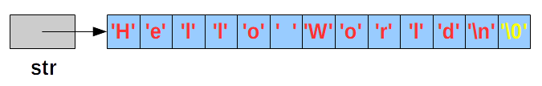
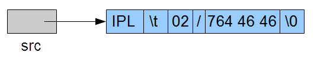
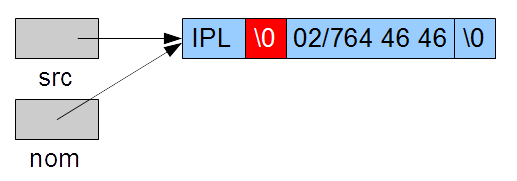
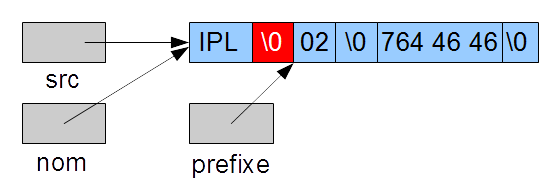
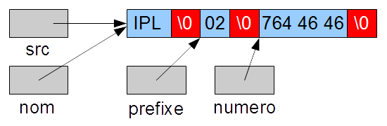
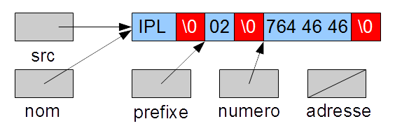
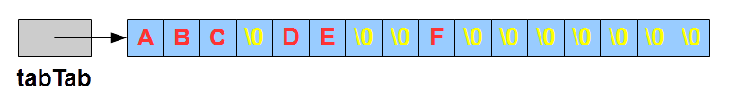
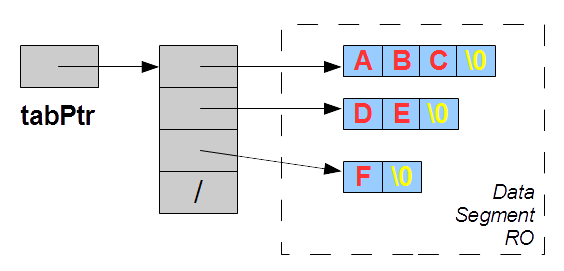
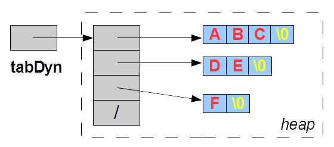
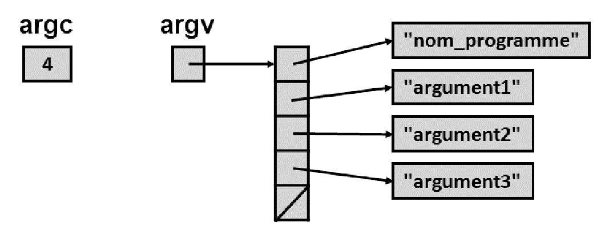

5. Chaînes de caractères
Contrairement à d'autres langage, le type string n'existe pas en C. Or cette notion est nécessaire pour permettre une interaction avec l'utilisateur qui s'exprime avec des mots. Il est donc important de pouvoir représenter et manipuler aisément des chaînes de caractères.
Le langage C va utiliser des tableaux de caractères pour stocker les chaînes de caractères. Dans le but de simplifier leurs traitements, il va introduire une particularité à ces tableaux : le tableau des caractères qui représente la chaîne sera toujours terminé par un caractère spécial: '\0' (0X00).
Nous pouvons donc représenter la chaîne "Hello World\n" par le tableau suivant:
Nous remarquons que, à cause du caractère fin de chaîne '\0', le nombre de bytes utilisés dans ce tableau est 13, même si la chaîne ne compte que 12 caractères.
Ce schéma illustre parfaitement l'intérêt du caractère fin de chaîne. En effet, nous constatons que la variable str nous fournit uniquement l'adresse du premier caractère de la chaîne, seule information disponible sur celle-ci. Le caractère '\0' permet dès lors au langage C de déterminer où se termine la chaîne.
Définition de chaînes de caractères
L'utilisation de chaînes de caractères nécessite la définition de variables, soit sous forme d'un tableau de caractères (p.e. char mot[25]), soit sous la forme d'un pointeur sur un caractère (p.e. char *mot). La différence se situe au niveau de la gestion de la mémoire.
La définition d'un tableau de caractères réserve un certain nombre de bytes en mémoire (indiqué par la taille du tableau). Cela impose de copier les caractères dans le tableau.
Par contre, la définition d'un pointeur sur un caractère ne réserve aucun espace mémoire pour stocker la chaîne, mais uniquement un pointeur, càd. une adresse où retrouver la chaîne de caractères. Pour utiliser ce pointeur, il est nécessaire de l'affecter,
-
Soit avec l'adresse d'une zone mémoire allouée (malloc),
-
Soit avec un tableau,
-
Soit avec un autre pointeur,
-
Ou encore avec un littéral déclaré entre guillemets " (défini dans le data segment RO).
Traitement des chaînes de caractères
Le premier point sur lequel il est nécessaire d'insister est qu'une chaîne de caractères est un tableau de caractères et que toutes les remarques énoncées à propos des tableaux restent d'application; comme le fait de s'assurer que la zone mémoire est suffisante pour stocker tous les caractères dans le tabeau, en n'oubliant pas de compter le caractère fin de chaîne '\0'. Dans cette optique, il n'est pas inutile de rappeler que l'espace mémoire peut être réservé soit à la compilation (p.e. char ligne[257]) lorsque l'on connaît la taille du tableau et qu'elle restera fixe durant la vie du processus, soit par une allocation dynamique, lorsque la taille est inconnue à la compilation ou que cette taille peut varier en cours d'exécution.
Dans l'exemple suivant, nous définissons un tableau de 257 caractères permettant de stocker en mémoire une ligne lue sur l'entrée standard stdin (clavier). Comme nous ne connaissons pas à l'avance la taille de la ligne à lire, nous choisissons une taille que nous espérons suffisante et en lien avec les caractéristiques du système (la taille du buffer de lecture, multiple de 2^8=256).
char ligne[257];while (fgets(ligne, 257, stdin) != NULL) {printf("La chaîne lue est : '%s'", ligne);}
La fonction fgets lit sur stdin une ligne (jusque et y compris le caractère de fin de ligne '\n') et stocke les caractères lus dans le tableau ligne, avec un maximum de 255 caractères (pour laisser une place au caractère de fin de ligne, ainsi qu'au caractère '\0', ajouté par la fonction elle-même); si l'utilisateur a introduit une ligne plus longue, la suite de la ligne sera lue lors de l'appel suivant de la fonction fgets. La fonction renvoie ligne, i.e. l'adresse du tableau de caractères, ou NULL si une erreur ou la fin du fichier a été rencontrée.
Plusieurs fonctions permettent l'affichage d'une chaîne de caractères. Dans un premier temps, nous utiliserons la fonction printf. Le format à utiliser pour afficher une chaîne est %s.
Un autre aspect à prendre en compte lors de l'utilisation des chaînes de caractères est que le langage C ne prévoit aucunement le stockage de la taille de la chaîne, cette information doit être gérée par l'application elle-même.
Les littéraux représentant une chaîne de caractères sont encadrés du caractère " (p.e. "Hello World\n").
Les fonctions standard
Comme il n'existe pas de type string en C, les opérations que l'on désire accomplir sur les chaînes de caractères ne peuvent pas être réalisées au moyen d'opérateurs : pas d'opérateur de concaténation, pas d'opérateur de comparaison, etc.
Pourtant ces traitements sont nécessaires. La solution mise en place par les concepteurs du langage est de proposer des fonctions standard, adaptées au système sur lequel tourne l'application. La déclaration de ces fonctions est reprise dans le fichier d'entête string.h, qu'il est donc impératif d'inclure dans chaque programme qui manipule des chaînes de caractères.
Les fonctions de base
Ces fonctions reçoivent une ou deux chaînes en paramètre.
- size_t strlen (const char *s)
- Fonction qui calcule la longueur (le nombre de caractères) de la chaîne passée en paramètre ; size_t est un type entier non signé.
- char* strcpy (char *dest, const char *src)
-
Fonction qui copie la chaîne contenue à l'adresse src
dans la zone mémoire dont l'adresse est dest ;
le programme doit s'assurer que dest est suffisamment grand pour contenir le nombre de caractères de la source
plus 1 (pour le caractère fin de chaîne '\0').
Attention, il ne faut pas confondre la copie profonde effectuée par strcpy avec l'affectation:
char *s1 = "abc";char *s2 = s1; // copie de pointeurs!qui copie l'adresse de la chaîne "abc" dans s2 (copie superficielle)!
- char* strcat (char *dest, const char *src)
- Fonction qui concatène la chaîne pointée par src à la chaîne dont l'adresse est dest ; le programme doit s'assurer que la longueur de la zone mémoire dest est au moins égale à la somme des longueurs des deux chaînes plus 1 (pour le caractère fin de chaîne '\0').
- int strcmp (const char *dest, const char *src)
-
Fonction qui compare deux chaînes de caractères ;
la valeur renvoyée sera 0 si les contenus des chaînes sont égaux,
inférieure à 0 si la première est plus petite suivant l'ordre alphabétique, strictement positive si la première est supérieure.
Attention, il ne faut pas confondre la comparaison caractère par caractère réalisée par strcmp avec la comparaison:
qui compare 2 pointeurs, càd. 2 adresses mémoires!if (p == q) { // comparaison d'adresses!printf(" ????????????? \n");}
Les fonctions de base avec une taille maximale
Les fonctions de base ne permettent pas de limiter le traitement des chaînes à un certain nombre de caractères, ce qui peut être gênant. La librairie standard string comprend d'autres fonctions qui reçoivent un paramètre supplémentaire: une taille maximale.
- char* strncpy (char *dest, const char *src, size_t n)
- Fonction qui copie la chaîne contenue à l'adresse src dans la zone mémoire dont l'adresse est dest ; la copie se termine au \0 ou après n caractères, mais dans ce dernier cas, le caractère \0 n'est pas recopié dans le tableau dest.
- char* strncat (char *dest, const char *src, size_t n)
- Fonction qui concatène la chaîne pointée par src à la chaîne dont l'adresse est dest ; la concaténation se termine au \0 ou après n caractères, mais dans ce dernier cas, le caractère \0 n'est pas recopié dans le tableau dest.
- int strncmp (const char *dest, const char *src, size_t n)
- Fonction qui compare les n premiers caractères (au maximum) de deux chaînes ; la valeur renvoyée sera nulle si les chaînes sont égales, inférieure à 0 si la première est plus petite suivant l'ordre alphabétique, plus grand que 0 si la première est supérieure.
Les fonctions de recherches
- char* strchr (const char *chaine, int car)
- Fonction qui cherche le caractère car dans la chaîne chaine ; la fonction retourne l'adresse de la première occurrence du caractère ou NULL si le caractère n'est pas trouvé.
- char* strrchr (const char *chaine, int car)
- Fonction qui cherche le caractère car dans la chaîne chaine ; la fonction retourne l'adresse de la dernière occurrence du caractère ou NULL si le caractère n'est pas trouvé.
- char* strstr (const char *chaine, const char *sub)
- Fonction qui cherche la sous-chaîne sub dans la chaîne chaine ; la fonction retourne l'adresse de la première occurrence de la sous-chaîne ou NULL si la sous-chaîne n'est pas trouvée.
- size_t strspn (const char *chaine, const char *ensemble)
- Fonction qui cherche le premier caractère de la chaîne chaine qui n'appartient pas à l'ensemble ; la fonction retourne l'indice de ce caractère ou la longueur de la chaîne si tous les caractères sont présents.
- size_t strcspn (const char *chaine, const char *ensemble)
- Fonction qui cherche le premier caractère de la chaîne chaine qui appartient à l'ensemble ; la fonction retourne l'indice de ce caractère ou la longueur de la chaîne si aucun caractère n'est présent.
- char* strpbrk (const char *chaine, const char *ensemble)
- Fonction qui réalise le même traitement que strcspn mais renvoie un pointeur sur le premier caractère de la chaîne chaine qui appartient à l'ensemble, ou un pointeur nul si aucun caractère n'est présent.
La fonction strtok
Cette fonction permet de découper une chaîne de caractères en tokens (mais son utilisation est très différente du tokenizer de Java). Sa déclaration char* strtok (char *str, const char *delim) nous apprend que la fonction reçoit 2 arguments, le premier est la chaîne de caractères à analyser:
et le second est une chaîne de caractères reprenant la liste des séparateurs pris en compte pour déterminer le token. La fonction renvoie l'adresse du token trouvé.
char src[] = "IPL 02/764 46 46";char *nom;if ((nom = strtok(src, "\t \r")) == NULL) {fprintf(stderr, "???\n");return 1;}
Attention, la fonction va modifier la chaîne source en remplaçant le délimiteur par le caractère \0, qui déterminera la fin du token.
Pour obtenir le token suivant, il faut ré-appeler la fonction, mais cette fois le premier argument n'est plus l'adresse d'une chaîne mais le pointeur nul NULL pour spécifier à la fonction que l'on continue de travailler sur la chaîne traitée lors de l'appel précédent. La liste des délimiteurs peut être modifiée lors de chaque appel de la fonction.
char *prefixe;if ((prefixe = strtok(NULL, "/")) == NULL){fprintf(stderr, "???\n");return 1;}
Si la fonction ne trouve pas le séparateur, elle considère la fin de la chaine source comme le token à renvoyer.
char *numero;if ((numero = strtok(NULL, ":")) == NULL){fprintf(stderr, "???\n");return 1;}
Lorsque la chaîne est vide, la fonction renvoie un pointeur nul.
char *adresse;if ((adresse = strtok(NULL, ":;")) == NULL){fprintf(stderr, "C'est fini...\n");return 1;}
Les fonctions de conversions numériques
La conversion d'une chaîne de caractères en la valeur numérique qu'elle représente peut se faire en utilisant des fonctions de conversion simple - double atof(const char *str), int atoi(const char *str), long atol(const char *str) - qui ne donnent aucune information sur le résultat, ou grâce à des fonctions qui fourniront des informations exploitables pour s'assurer que la conversion est correcte - double strtod(const char *str, char **pptr), long strtol(const char *str, char **pptr, int base), unsigned long strtoul(const char *str, char **pptr, int base). Ces fonctions nécessitent l'inclusion du fichier stdlib.h.
Voici les fonctions de conversions simples:
- double atof(const char *str)
- Cette fonction convertit la valeur comprise dans la chaîne str en un nombre double ; la conversion se termine au premier caractère qui n'est pas interprétable.
- int atoi(const char *str)
- Cette fonction convertit la valeur comprise dans la chaîne str en un nombre int ; la conversion se termine au premier caractère qui n'est pas interprétable.
- int atol(const char *str)
- Cette fonction convertit la valeur comprise dans la chaîne str en un nombre long ; la conversion se termine au premier caractère qui n'est pas interprétable.
Les fonctions suivantes convertissent la chaîne avec une référence sur le caractère qui cause l'arrêt de la conversion. Dans ces fonctions, le paramètre char **pptr permet à la fonction de renvoyer l'adresse du caractère qui a causé l'arrêt de la conversion. De plus la fonction positionne la variable système errno à un code d'erreur qui indique la raison de l'arrêt de la conversion.
- double strtod(const char *str, char **pptr)
- Cette fonction convertit la valeur comprise dans la chaîne str en un nombre double ; la conversion se termine au premier caractère qui n'est pas interprétable, dont l'adresse est renvoyée dans le paramètre pptr.
- long strtol(const char *str, char **pptr, int base)
- Cette fonction convertit la valeur comprise dans la chaîne str en un nombre long int ; elle convertit un nombre encodé dans une base comprise entre 2 et 36 ; la conversion se termine au premier caractère qui n'est pas interprétable.
- unsigned long strtoul(const char *str, char **pptr, int base)
- Cette fonction convertit la valeur comprise dans la chaîne str en un nombre unsigned long int ; elle convertit un nombre encodé dans une base comprise entre 2 et 36 ; la conversion se termine au premier caractère qui n'est pas interprétable.
Les fonctions de traitements sur la mémoire
Semblables aux fonctions de traitement des chaînes de caractères, elles utilisent des zones mémoires non spécifiques aux chaînes de caractères et donc se basent sur une dimension (en bytes) pour limiter leur action.
- void* memchr (const void *ptr, int car, size_t n)
- Fonction qui cherche le caractère car dans la zone mémoire d'adresse ptr sur n bytes ; la fonction retourne l'adresse de la première occurrence du caractère ou NULL si le caractère n'est pas trouvé.
- int memcmp (const void *ptr1, const void *ptr2, size_t n)
- Fonction qui compare les n premiers bytes de deux zones de mémoire.
- char* memcpy (void *dest, const void *src, size_t n)
- Fonction qui copie n bytes d'une zone mémoire dans une autre.
- char* memmove (void *dest, const void *src, size_t n)
- Fonction qui copie n bytes d'une zone mémoire dans une autre, les zones mémoire peuvant se superposer.
- void* memset (void *ptr, int car, size_t n)
- Fonction qui place n caractères car dans la zone mémoire ptr.
Tableaux de chaînes de caractères
En accord avec la définition d'une chaîne de caractères, nous comprenons aisément qu'un tableau de chaînes de caractères est en fait un tableau de tableaux de caractères, peut-être un peu particulier.
Tables définies à la compilation
Une table de chaînes de caractères peut être définie de deux manières différentes:
soit comme une table de tables de caractères
char tabTab[4][4] = {"ABC", "DE", "F"};

soit comme une table de pointeurs sur un caractère
char* tabPtr[4] = {"ABC", "DE", "F"};

Dans le second cas, la table tabPtr contient des adresses de chaînes (l'adresse est mise à NULL si aucune chaîne n'est définie). Tandis que dans le premier cas, la table tabTab contient des tableaux de 4 caractères (le caractère est mis à zéro s'il n'est pas défini).
Tables dynamiques
Pour allouer une table de chaînes de caractères char **table dynamiquement,
il faut d'abord allouer la table des pointeurs
table=(char**)malloc((n+1)*sizeof(char*)),
où n+1 permet de tenir compte du pointeur nul qui marquera la fin de la table (ce qui facilitera son parcours),
et ensuite pour chaque pointeur, allouer la mémoire suffisante et recopier la chaîne.
char tabTab[4][4] = {"ABC", "DE", "F"};char **tabDyn;// allocation de 4 pointeurs sur un caractèreif ((tabDyn = (char**)malloc(4*sizeof(char*))) == NULL){perror("Malloc KO\n");return 1;}// copie des chaînes de tabTab dans tabDynfor (int i=0; i<4; i++) {if (tabTab[i]) == NULL) {// copie de pointeur NULLtabDyn[i] = NULL;} else {// allocation de la mémoire pointée par tabDyn[i] pour stocker la chaîne tabTab[i]if ((tabDyn[i] = (char*)malloc((strlen(tabTab[i])+1)*sizeof(char))) == NULL) {perror("Malloc KO\n");return 1;}// copie de la chaîne tabTab[i] dans la zone mémoire pointée par tabDyn[i]strcpy(tabDyn[i], tabTab[i]);}}
Un cas particulier: le tableau des arguments du programme
Lorsque l'utilisateur veut passer des arguments au programme, il doit utiliser une structure particulière: un tableau des arguments déclaré comme paramètre de la fonction principale main. Chaque argument de l'application est une chaîne de caractères qui est reprise dans un tableau. Le premier élément de cette table, l'élément 0 du tableau, est le nom du processus. L'autre paramètre de cette fonction main, de type int, donne le nombre de chaînes dans la table, à savoir le nombre des arguments + 1. Le dernier élément de la table est un pointeur nul pour marquer la fin de la table.
Si l'utilisateur appelle le programme suivant :
int main (int argc, char *argv[]) {printf("Le nom du processus est '%s'\n", *argv);if (argc == 3){printf("Le nom du premier argument est '%s'\n", *(argv+1));printf("Le nom du second argument est '%s'\n", argv[2]);}}
en introduisant dans le shell la commande suivante :
./affiche arg1 arg2
Voici le résultat qui s'affichera
Le nom du processus est './affiche' Le nom du premier argument est 'arg1' Le nom du second argument est 'arg2'
Traitement des caractères
Avant de terminer ce chapitre, passons rapidement en revue quelques macros de traitements d'un caractère.
Les traitements essentiels des caractères ont été codés dans des macros, définies dans le fichier d'entête ctype.h de la librairie standard C. Ces macros permettent de caractériser un caractère (stocké dans un char ou dans un int):
- int isalpha(int c)
- teste si c est une lettre
- int islower(int c)
- teste si c est une lettre minuscule
- int isupper(int c)
- teste si c est une lettre majuscule
- int isdigit(int c)
- teste si c est une chiffre
- int isalnum(int c)
- teste si c est une lettre ou un chiffre
- int isxdigit(int c)
- teste si c est une chiffre hexadécimal
- int ispunct(int c)
- teste si c est un caractère de ponctuation
- int isprint(int c)
- teste si c est un caractère imprimable (32 à 126)
- int isgraph(int c)
- teste si c est un caractère imprimable visible (33 à 126)
- int iscntrl(int c)
- teste si c est un caractère de contrôle (0 à 31 ou 127)
- int isspace(int c)
- teste si c est un espacement (' ', '\t', '\n', '\r', '\f', '\v')
- int isascii(int c)
- teste si c est compris entre 0 et 127
Ou de modifier un caractère:
- int tolower(int c)
- renvoie le caractère en minuscule
- int toupper(int c)
- renvoie le caractère en majuscule